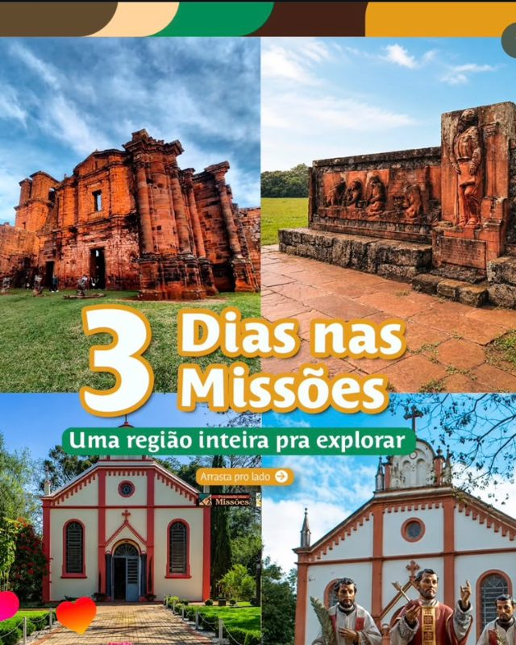
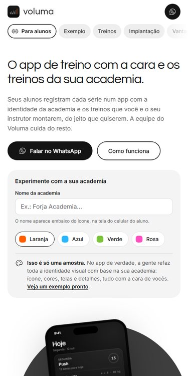

Social media
Gestão completa do Instagram, com cara de marca e objetivo em cada post.
- Calendário editorial do mês
- Posts, carrosséis e stories
- Edição de vídeos e Reels
- Roteiros e legendas
- Publicação e relatório
Agenda aberta para novos projetos · São Miguel das Missões, RS
Sou Pedro Munareto, social media, gestor de tráfego e criador de landing pages. Cuido do marketing de empresas e instituições do começo ao fim: planejo, crio as artes e os vídeos, rodo os anúncios e programo as páginas para onde eles levam.
quando comecei, criando as campanhas da FASA
atendidas, de faculdade a pousada, loja e banda
sites e painéis no ar, programados por mim
conteúdo, anúncios e landing pages
// o que eu faço
Você não precisa contratar uma pessoa para o Instagram, outra para os anúncios e outra para o site. Eu faço as três coisas, e uma conversa com a outra.
Gestão completa do Instagram, com cara de marca e objetivo em cada post.
Anúncios no Facebook e no Instagram (Meta Ads) feitos para virar conversa no WhatsApp.
Sites e páginas de venda que eu mesmo programo, sem template e sem mensalidade de plataforma.
// resultados · case Pousada das Missões
Na Pousada das Missões, em São Miguel das Missões, cuido do Instagram por completo e dos anúncios. Todos os números abaixo saem do próprio Instagram da pousada e do Gerenciador de Anúncios, com o print junto.
Reel em destaque
“Você chamou a cruz pelo nome errado a vida toda!”



O anúncio “2 dias em São Miguel” gerou 430 conversas a R$ 1,16 cada, com R$ 499,80 investidos.
O Reel “Do Patrimônio Mundial…” rodou três vezes, em datas diferentes, e ficou entre R$ 1,17 e R$ 1,96 por conversa.
Um post de feed chegou a R$ 12,06 por conversa e foi cortado. Saber parar o que não rende também é resultado.
// trajetória
Comecei em 2024, fazendo as campanhas da FASA. De lá para cá vieram mais marcas, os anúncios e os sites.
De julho a dezembro criei as peças da FASA, faculdade do noroeste do RS: campanhas de vestibular, cursos de extensão, o FASA Summit e a cobertura das visitas a 19 escolas da região. No mesmo ano vieram os primeiros clientes do comércio e do agro.
FASA · Escola Padre Antônio Sepp · Planti Center · Colleto · Agrícola Sete Povos
Carrosséis para profissionais liberais e comércio com a Mitra Digital Solutions, as mesas e lareiras sob encomenda da Tábua Gaúcha e posts de produto para loja de skin care. No meio do ano assumi o Instagram da Pousada das Missões.
Mitra Digital Solutions · Tábua Gaúcha · Loja de skin care · Pousada das Missões
A Pousada das Missões passou de meio milhão de visualizações em 90 dias e de mil conversas pelos anúncios. Programei o site de roteiros da pousada, o site do Grupo Eco do Pampa das Missões e a landing page do Voluma, e entraram novos clientes.
Pousada das Missões · Grupo Eco do Pampa das Missões · Anima Missões · Voluma
// trabalhos selecionados
Carrossel pensado como uma peça só: a imagem passa de um slide para o outro.
// sites e landing pages
Nada de modelo pronto: cada página é escrita em código, pensada primeiro para o celular e para levar a pessoa até o WhatsApp. Todas estão no ar.


Pousada das Missões · 2026
Site para o link da bio da pousada: ideias de roteiro de 1 a 7 dias, página dos pontos turísticos, galeria da pousada e versão em espanhol para quem vem do Uruguai e da Argentina.
Ver site no ar

Grupo Eco do Pampa das Missões · 2026
Capa que abre com música, Spotify, vídeo ao vivo, galeria de palco e contratação direto pelo WhatsApp.
Ver site no ar

Voluma · 2026
Página de venda de um app de treino para donos de academia, que mostra o app com o nome e a cor da academia na hora.
Ver site no ar

Pousada das Missões · 2026
Relatório em página com todas as campanhas, o custo de cada conversa e o que vale repetir ou cortar.
Ver painel

FASA e Pousada das Missões
Todas as peças dos seis meses de FASA, separadas por campanha, e o case da pousada com os prints.
Ver página// formação
Estudo Ciência da Computação na URI. É isso que me deixa ir além do post: programo as páginas para onde os anúncios levam, monto painéis com os números das campanhas e uso automação e inteligência artificial para entregar mais rápido, sem descuidar de cada arte.
Bacharelado · em andamento
URI · Universidade Regional Integrada do Alto Uruguai e das Missões
Na faculdade
Ferramentas do dia a dia
// como eu trabalho
Olho o perfil, os concorrentes e os números que já existem.
Calendário do mês, com o objetivo de cada post.
Artes, vídeos e legendas, aprovados com você antes de sair.
Campanhas para gerar conversa no WhatsApp, testadas e ajustadas.
O que deu resultado, o que cortar e o que repetir no mês seguinte.
// vamos conversar
Me chama no WhatsApp e me conta da sua empresa. Quem responde sou eu.